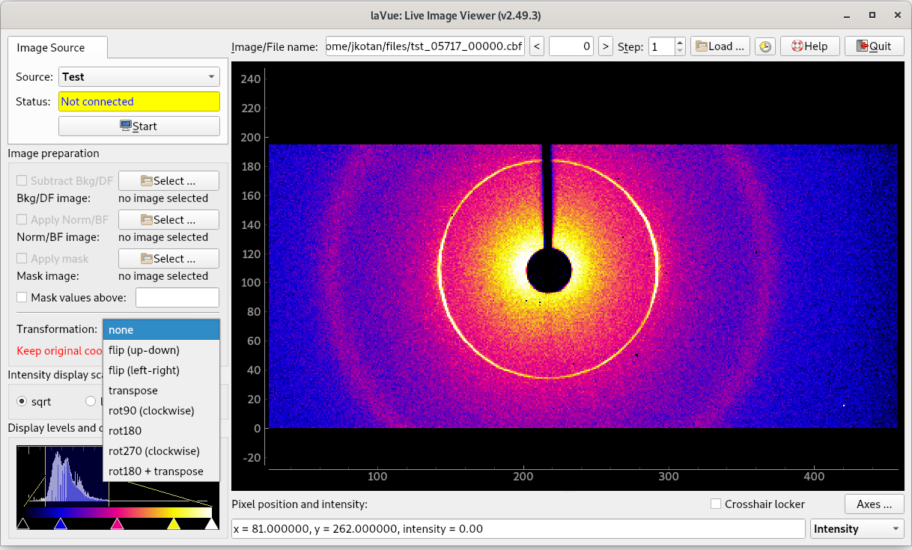

Image Preparation¶

Background/DarkField image: subtract background or dark field image from a file or from an image source
Normalization/BrightField image: apply normalization or bright field image correction from a file or from an image source, i.e. (image - DF) / (BF - DF)
DF scaling factor: multiplicative correction to the background or dark field image
BF scaling factor: multiplicative correction to the brightfield image
Mask image: mask plotted image with respect to a file. Convention of zero mask pixels can be set in the configuration, by default none-zero masks pixel to zero.
Mask values above: mask image pixels which have intensity above the given value
Transformation: all 8 possible. Whether axes are changing with transformations or not can be set in the configuration.
Background image and mask image can be loaded from the file formats supported by fabio or a NeXus file.